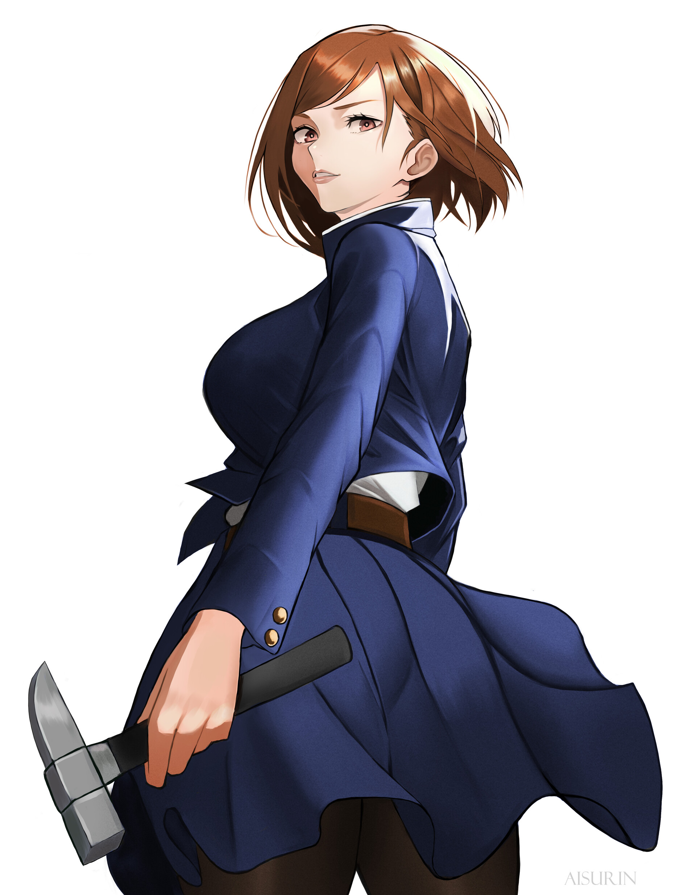

Itadori Yuji is the main protagonist of the series. He is a high school student with impressive physical abilities, particularly in track and field. His life takes a drastic turn when he encounters a cursed object containing a malevolent Curse. To protect his friends, Yuji decides to consume the cursed object, a rotting finger, which unleashes a world of curses upon him.
After consuming the finger, Itadori becomes involved in the world of jujutsu sorcery, where curses, spirits, and magical battles are commonplace. He joins Tokyo Metropolitan Jujutsu Technical High School, an institution dedicated to the study and combat of curses. Alongside other students, including Megumi Fushiguro and Nobara Kugisaki, Yuji embarks on a journey to collect and consume all of Sukuna's cursed fingers to prevent further calamities.
Itadori Yuji is known for his strong sense of justice, determination, and willingness to protect others, even at great personal risk. The series explores themes of life, death, and the consequences of dealing with curses.
Megumi Fushiguro
Megumi Fushiguro is introduced as a student at Tokyo Metropolitan Jujutsu Technical High School, where he trains to become a jujutsu sorcerer. One notable early event in the series involves Megumi and Itadori encountering a cursed spirit at their school. This encounter leads to Itadori consuming a cursed object to save Megumi and his friends, setting off the main plot of the series.
Megumi is known for his strong jujutsu abilities, particularly his Shadow Technique. As the story progresses, he faces various powerful curses and participates in intense battles alongside his fellow students. Megumi's stoic demeanor and his internal struggles with the responsibilities of being a jujutsu sorcerer contribute to the depth of his character.
Later in the series, Megumi's past and family background are explored, shedding light on some of the factors that shaped his perspective on curses and the jujutsu sorcerer world. His interactions with other characters, including Itadori and Nobara, highlight the camaraderie and bonds formed among the students.
Nobara Kugisaki
Nobara Kugisaki is another important character in the manga and anime series "Jujutsu Kaisen." Created by Gege Akutami, Nobara is a student at Tokyo Metropolitan Jujutsu Technical High School, training to become a jujutsu sorcerer. Like Itadori Yuji and Megumi Fushiguro, she is one of the main protagonists of the series.
Nobara Kugisaki's character brings diversity and depth to the cast of "Jujutsu Kaisen." Her unique abilities, personality, and backstory contribute to the series' overall narrative and add to the richness of the character dynamics.

Satoru Gojo
Satoru Gojo (五ご条じょう悟さとる Gojō Satoru) is one of the main protagonists of the Jujutsu Kaisen series. He is a special grade jujutsu sorcerer and widely recognized as the strongest in the world. Satoru is the pride of the Gojo Family, the first person to inherit both the Limitless and the Six Eyes in four hundred years. He works as a teacher at the Tokyo Jujutsu High and uses his influence to protect and train strong young allies.
Ryomen Sakuna
Ryomen Sukuna whas the most powerful sorcerer in the history and lived in the golden age of jujutsu. He is known for being the King of Curses and because of that every sorcerer knew about him.
The plot of "Jujutsu Kaisen" revolves around the protagonist, Itadori Yuji, and his friends collecting these Cursed Fingers to prevent Sukuna's full resurrection. Sukuna's presence in the story adds a layer of danger and complexity, as he is a formidable force with his own agenda and desires.